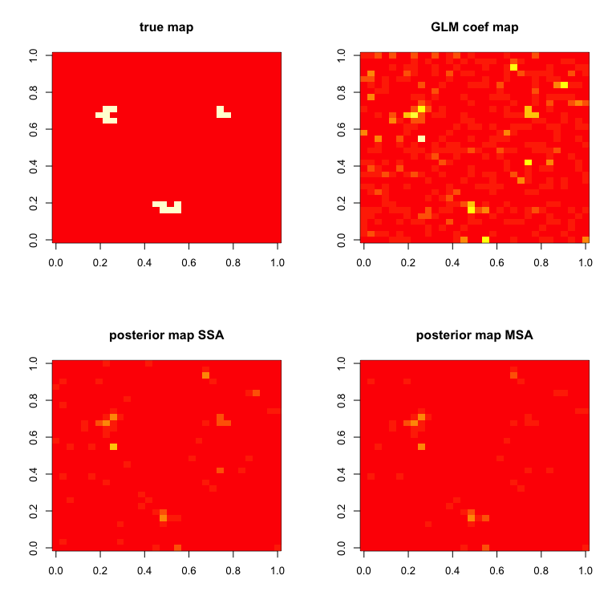

BHMSMAfMRI performs Bayesian hierarchical multi-subject multiscale analysis of function MRI (fMRI) data as described in Sanyal & Ferreira (2012), or other multiscale data, using wavelet based prior that borrows strength across subjects and provides posterior smooth estimates of the effect sizes and samples from their posterior distribution.
Installation
Install from CRAN
install.packages("BHMSMAfMRI")Install from GitHub
# install.packages("devtools")
devtools::install_github("nilotpalsanyal/BHMSMAfMRI")The main function:
BHMSMA is the main function which accepts fMRI data as a 4D array (see code below) and a design matrix. For the time-series of all voxels, a general linear model (GLM) is fit with all the regressors in the design matrix. After that, the standardized regression coefficient map of a regressor of interest is subjected to further analysis. The function BHMSMA returns the posterior smoothed map of the regression coefficients. Below is a basic illustration of its use. For a detailed manual, see the package vignette.
library(BHMSMAfMRI)
# Read data from image files
fpath <- system.file("extdata", package="BHMSMAfMRI")
untar(paste0(fpath,"/fmridata.tar"), exdir=tempdir())
n <- 3
grid <- 32
ntime <- 9
data <- array(dim=c(n,grid,grid,ntime))
for(subject in 1:n)
{
directory <- paste0(tempdir(),"/fmridata","/s0",subject,"/")
a <- readfmridata(directory, format="Analyze", prefix=paste0("s0",subject,"_t"),
nimages=9, dim.image=c(grid,grid,1))
data[subject,,,] <- a[,,1,]
}
data(fmridata)
names(fmridata)
#> [1] "grid" "nsubject" "TrueCoeff" "DesignMatrix"
truecoef <- fmridata$TrueCoeff
designmat <- fmridata$DesignMatrix
# Perform analyses
k <- 2 #consider the second regressor
analysis <- "multi" #perform multi-subject analysis (MSA)
BHMSMAmulti <- BHMSMA(n, grid, data, designmat, k, analysis, truecoef)
analysis <- "single" #perform single subject analysis (SSA)
BHMSMAsingle <- BHMSMA(n, grid, data, designmat, k, analysis, truecoef)
# Compare results for the first subject
zlim = c(0,max(abs(BHMSMAmulti$GLMCoefStandardized[1,,,k])))
par(mfrow=c(2,2))
image( truecoef[1,,],col=heat.colors(12),main="true map")
image( abs(BHMSMAsingle$GLMCoefStandardized[1,,,k]),
col=heat.colors(8),zlim=zlim,main="GLM coef map")
image( abs(BHMSMAsingle$GLMcoefposterior[1,,]),
col=heat.colors(8),zlim=zlim,main="posterior map SSA")
image( abs(BHMSMAmulti$GLMcoefposterior[1,,]),
col=heat.colors(8),zlim=zlim,main="posterior map MSA")
References:
Sanyal, Nilotpal, and Ferreira, Marco A.R. (2012). Bayesian hierarchical multi-subject multiscale analysis of functional MRI data. Neuroimage, 63, 3, 1519-1531. https://doi.org/10.1016/j.neuroimage.2012.08.041